Basic Information about me
- I am 22 years old
- My birthday is Oct. 10th
- Pronouns: They/Them
- Preferred Name: Nicky
- I live in Toledo, Ohio
- I was born in Arizona
- I have a dog named Max
My Story
I'm a 22yr old grad student at Wayne State University in the MLIS program with a specialization in Archives and Special Collections.
I am also working on my Archival Admin Certification as well. While hopefully starting a page job at my local library.
Even though my background is in Anthropology which is a subject that I love. I always knew that I wanted to be a librarian or Archivist since I started High School.
The library was always one of my favorite places to go to growing up and from my experience working at the Canaday Center only confirmed this dream of mine.
My Hobbies
- Drawing
- Painting
- Golf
- playing piano
Images of my art
I also like to do art in different media.
Here are some examples.
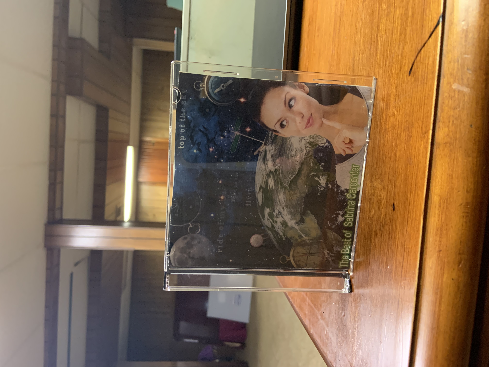 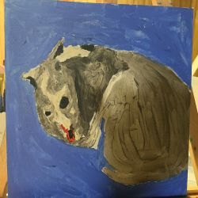 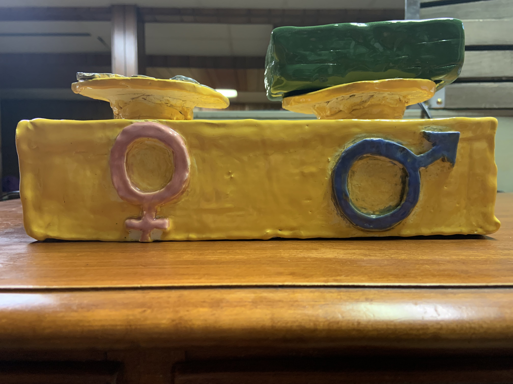 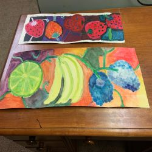 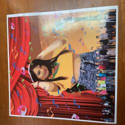
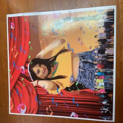
 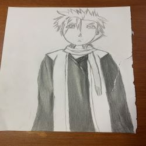
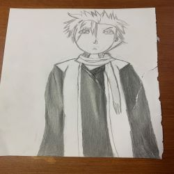
 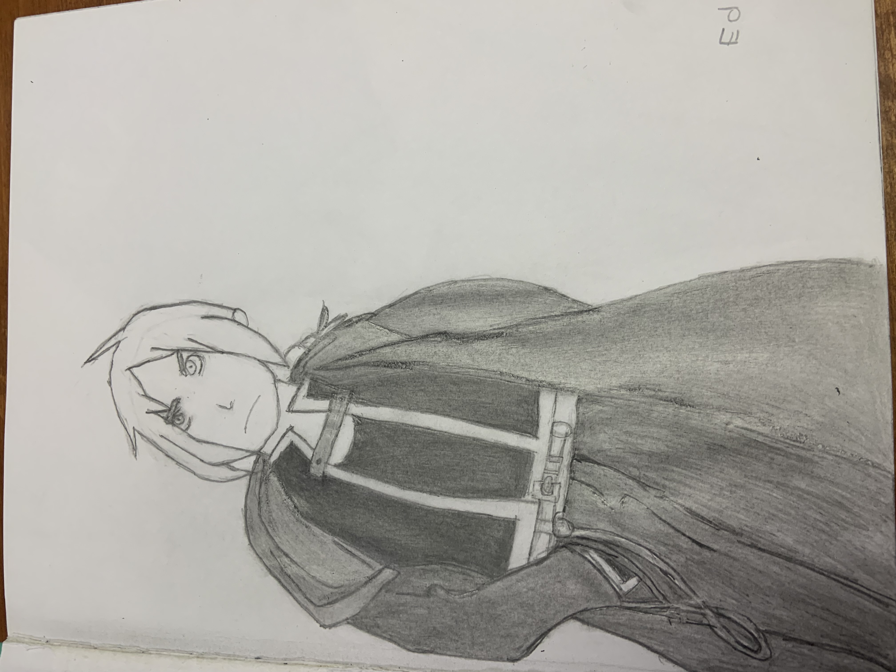
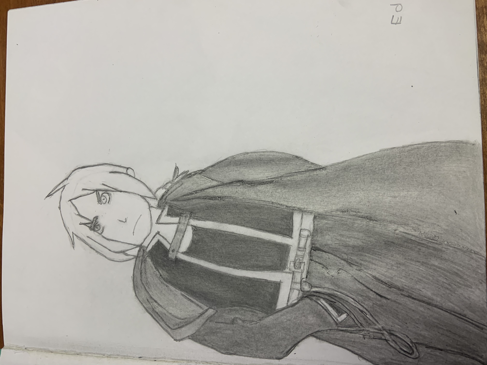
My Collections
I also like to collect different things such as books, snow globes, and charms.
Here are some images of them.

 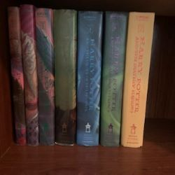
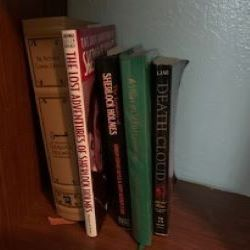
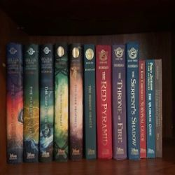
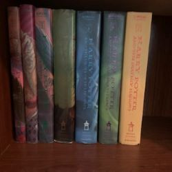
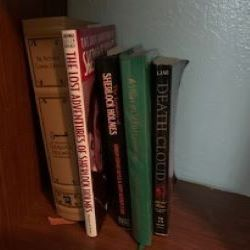
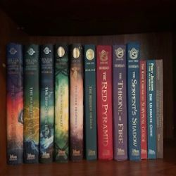
 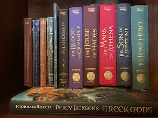
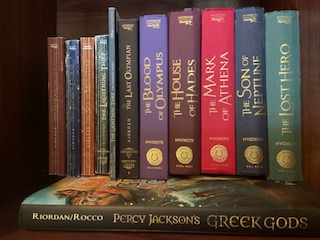
Things I like to do in my free time
- Read
- Watch TV especially anime
- My Hobbies